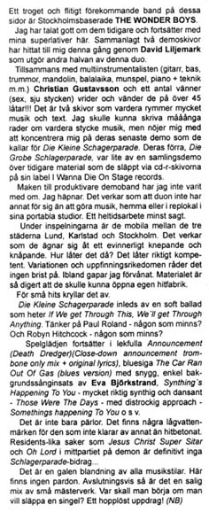

The Wonder Boys
news

Nicke Boström, ettnollett
#46-47, 2005
rough translation:
A faithful and frequent band on these pages are the Stockholm based THE
WONDER BOYS.
I’ve spoken well of them before and will continue my
superlatives here. A total of two demo records have found themselves to me this
time, through David Liljemark who constitutes the second half
of this duo.
Together with the multi-instrumentalist (guitar, bass, drums,
mandoline, balalaika, harmonica, piano + engineering, etc) Christian
Gustavsson and a number of friends (six, seven), they twist and turn
over 45 songs!!! It is two records that each contains a lot of music and lyrics.
I could write maaany lines about each piece of music, but will restrict myself
to concentrating on their latest demo that they call Die Kleine Schlagerparade.
Their last one, Die Grobe [sic!] Schlagerparade, was sort
of a collection demo, culling material from previously released cdr records
that they’ve released on their label I Wanna Die On Stage Records.
I’ve never seen the like of a more prolific demo band.
I’m amazed. It seems like the duo have nothing else to do, but to make
music, at home or in a rehearsal room with their portable studios. A full-time
occupation, to say the least.
During the recordings, they’re mobile between the three
cities Lund, Karlstad and Stockholm. It seems like they’re devoted to
an eternal dodgering and pottering. How does it sound then? It sounds really
competent. There’s no lack of variation and inventiveness. Sometimes I
gape with surprise. The material is so extensive that they could open their
own hit factory.
‘Cause it’s swarming with little hits.
Die Kleine Schlagerparade opens with a soft ballad
called If We get Through This, We’ll get Through Anything. Am
thinking about Paul Roland – anyone remember? And Robyn Hitchcock –
anyone remember?
The joy of playing continues with a playful Announcement
(Death Dredger) (Close-down announcement trombone only mix + original lyrics),
the bluesy The Car Ran Out Of Gas (blues version) with a beautiful,
simple backing vocals part by Eva Björkstrand. Synthing’s
Happening To You – indeed synth:y and danceable – Those
Were The Days – with dist-rocky approach – Something’s
Happening To You and so on.
It’s not all pearls. There’s a couple of low water
marks for those who can only handle hit-oriented stuff. Residents-like things
as Jesus Christ Super Sitar and Oh Lord in the middle of the
demo are no Schlagerparade-contributions...
It’s a crazy mix of all music styles. No quarter is
given. In conclusion, it’s a blessed mix of little masterpieces. Where
to start if you’d want to release a single? An impossible task!